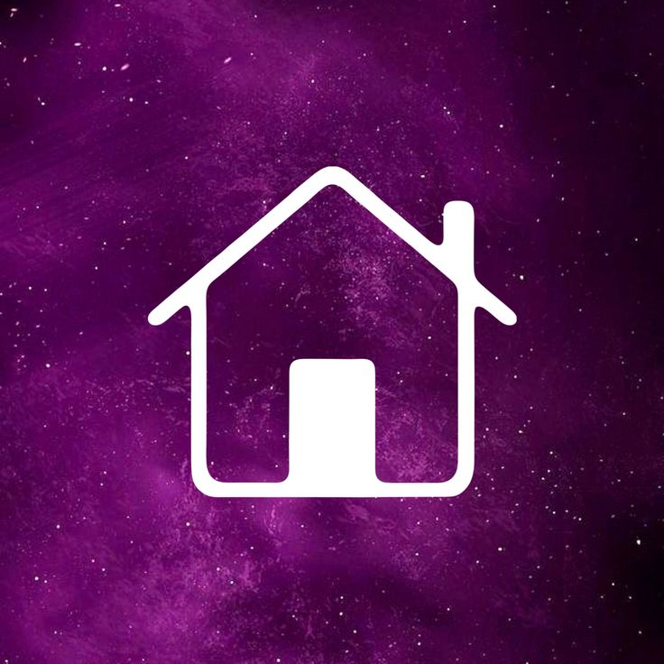
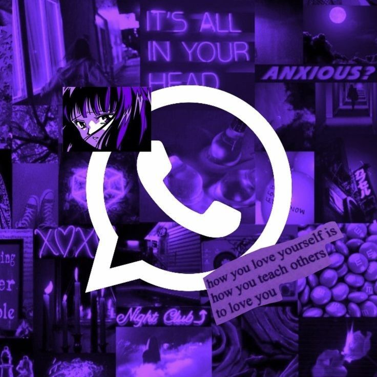
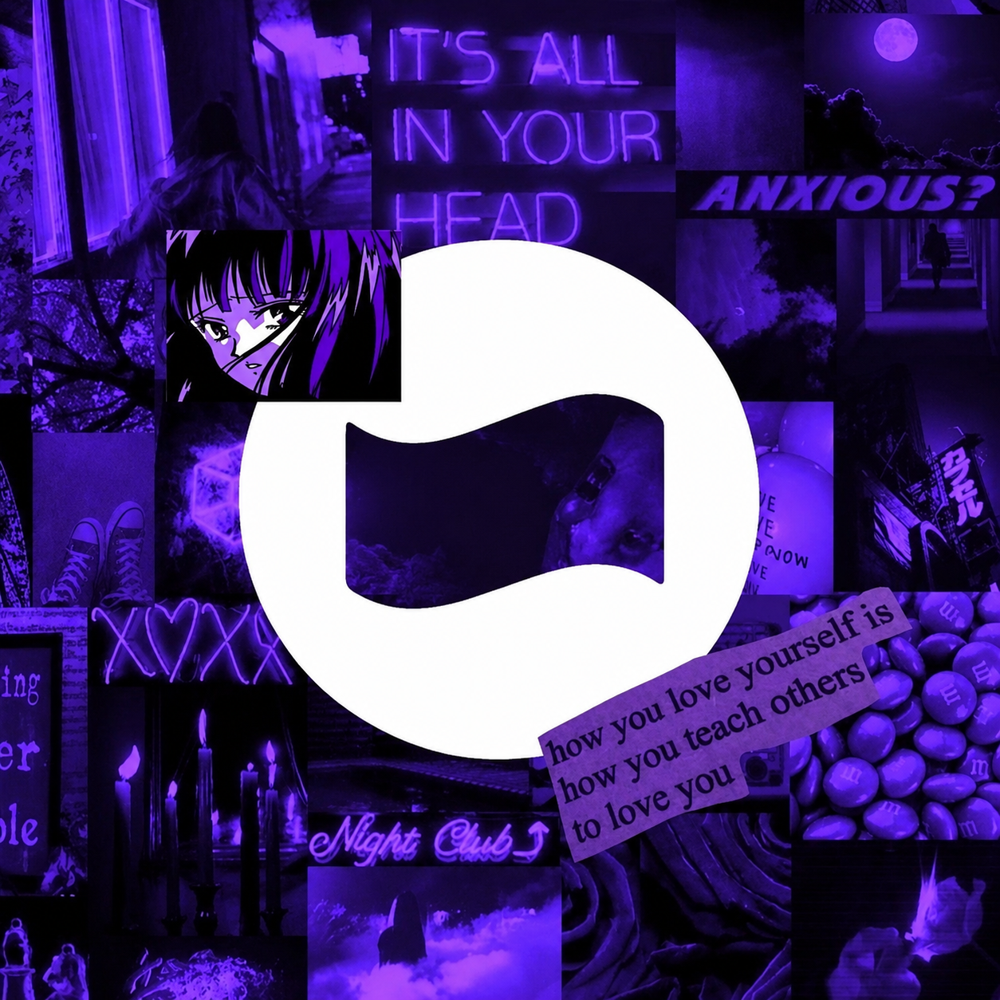
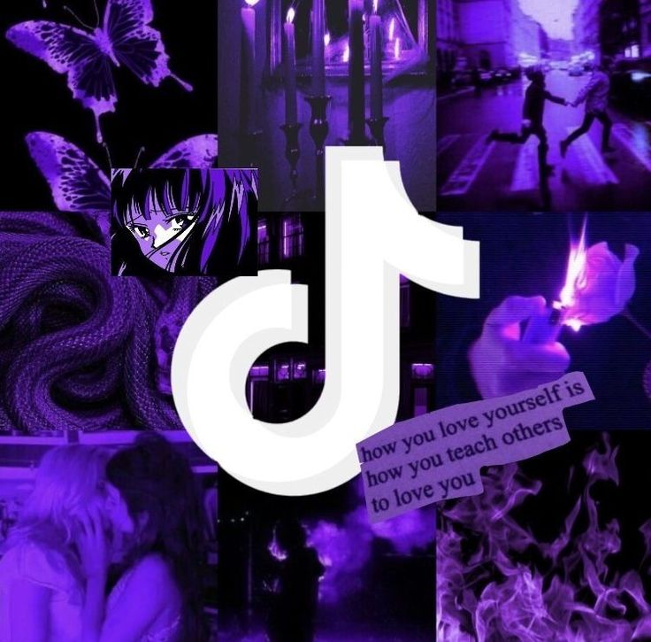

⚡ Zepar Features

Home
Fake Chat WA
Fake Saldo DANA Fake Post IG
Fake Tiktok Chat
Home
Fake Chat WA
Fake Saldo DANA Fake Post IG
Fake Tiktok ChatFitur ini sedang dalam pengembangan atau template telah disiapkan untuk menu sistem yang baru.